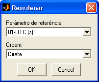
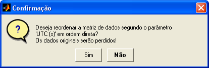

| Menu Funções |
|
Reordenar
Dados
Essa função
reordena todas as observações da matriz DADOS (exceto o parâmetro "No.OBS.")
segundo a ordem crescente ou decrescente de um parâmetro.
Clique no menu “Funções ►
Filtragem e reamostragem
... ► Reordenar dados”.
Informe o parâmetro de referência e a ordem (direta/reversa) para reordenação dos dados:

O usuário
deverá confirmar a operação:

Ao clicar “Sim”
toda a matriz DADOS será atualizada.
| Nota: Linhas com
valores inválidos (NaN) no parâmetro de
referência serão posicionadas no final da matriz. |
| |
Gerar
milissegundos |
Alterar
cadência |
|